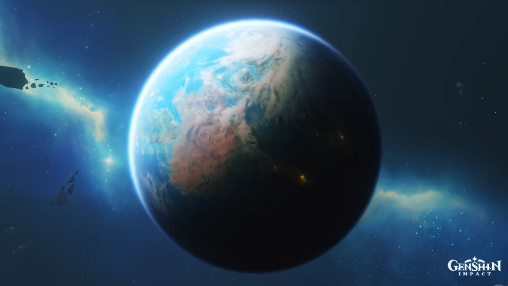

MENU DE NAVEGAÇÃO
Escolha uma região no menu abaixo para saber mais sobre seus elementos, Arcontes e cultura!
Bem-vindo ao Guia de Teyvat
Teyvat é o mundo onde se passa Genshin Impact e é formado por diferentes regiões. Cada região possui sua própria cultura, paisagens, história, personagens e características. Neste site, você poderá conhecer melhor as principais regiões de Teyvat, descobrindo o que torna cada uma delas única.


Diversidade de Teyvat
A grande variedade de ambientes faz de Teyvat um mundo com diferentes formas de vida. Plantas, animais, criaturas e pessoas vivem em ambientes que possuem características próprias. Por isso, conhecer as regiões de Teyvat também significa conhecer seus diferentes ecossistemas, paisagens e formas de vida. Cada região contribui para a diversidade do mundo de Genshin Impact.As Sete Nações e os Elementos
Teyvat é dividida em sete regiões principais, cada uma protegida por um Archon dedicado a um ideal único e associado a um elemento natural:- Mondstadt | Elemento Anemo (Vento) — A cidade da liberdade, conhecida por suas vastas planícies.
- Liyue | Elemento Geo (Rocha) — O próspero porto dos contratos e do comércio.
- Inazuma | Elemento Electro (Trovão) — Um arquipélago isolado que busca a eternidade.
- Sumeru | Elemento Dendro (Natureza) — O centro do conhecimento e da sabedoria, onde florestas tropicais e desertos escondem segredos ancestrais.
- Fontaine | Elemento Hydro (Água) — A nação da justiça e da arte, movida pela tecnologia, pelo espetáculo e pelo julgamento moral.
- Natlan | Elemento Pyro (Fogo) — A terra da guerra e do espírito de equipe, marcada pela força e por dragões antigos.
- Snezhnaya | Elemento Cryo (Gelo) — A terra governada pela Archon Cryo e seus Fatui, cuja ambição desafia a própria ordem dos céus.